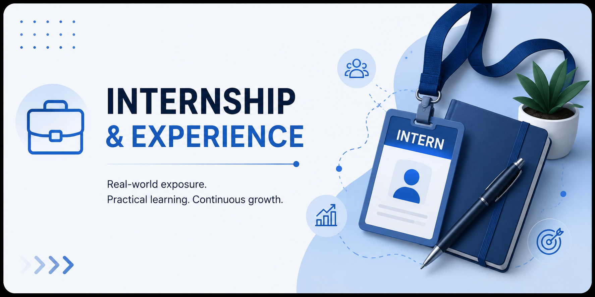

Internship
This page highlights my internship experiences, certifications, and practical projects that helped me strengthen my skills in data analytics, web development, and problem-solving through real-world learning and hands-on experience.

My internship journey has been a diverse and enriching experience spanning data analytics, web development, cybersecurity, and data visualization. Starting with web development at Wayspire, I built real-world projects including a Weather Report Website, a Score Update Website, and a Student Portal using React — which gave me a strong foundation in frontend development and responsive design.
Following that, I explored cybersecurity at GIET, where I gained hands-on exposure to network security, ethical hacking concepts, and vulnerability analysis. This experience broadened my perspective on how data and systems need to be protected in the real world.
My focus then shifted toward data analytics, where I have been actively working with DecodeLabs and Intern Infobyte — cleaning datasets, performing exploratory data analysis, and generating business insights using Excel and Power BI. Alongside this, my virtual internship with Yuva Intern – Henry Harvin has deepened my expertise in data visualization, KPI tracking, and transforming raw data into compelling, decision-ready dashboards.
Each internship has added a new dimension to my skill set, pushing me to think analytically, work independently in remote environments, and deliver meaningful results. These experiences have shaped me into a well-rounded professional with a passion for turning data into impactful stories and building solutions that matter.